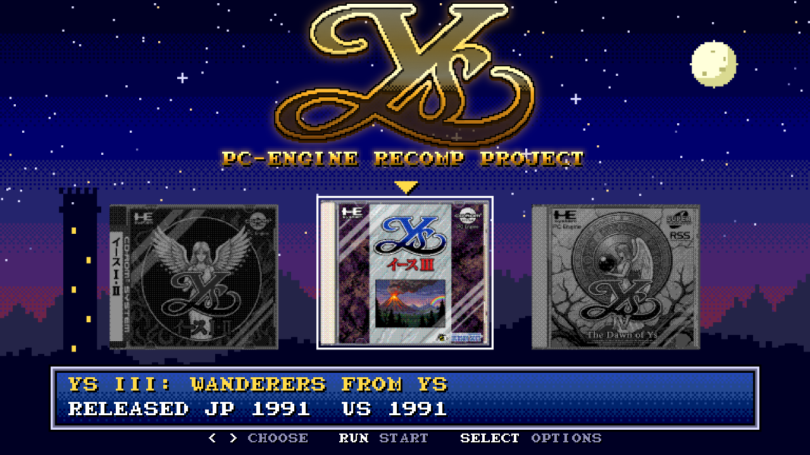
A launcher in the game's style
Pixel starfield, the game's 8x8 letters and its own sound effects, with the covers of the three PC Engine Ys games. Ys Book I & II is the playable one.
The 1989 TurboGrafx-CD classic, statically recompiled to run natively on Windows.
No emulator and no BIOS file: point it at your own bin/cue and play, with a widescreen-friendly display, smooth motion above 60 FPS and an options menu in the game's own style.
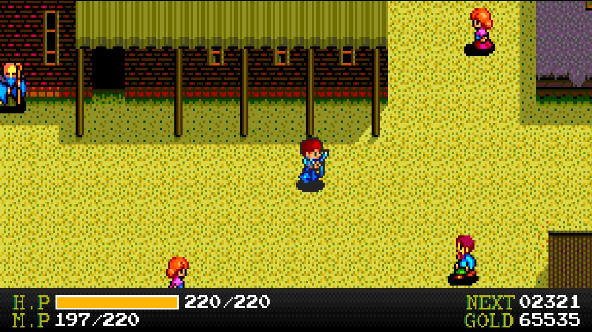
Everything the original does, exactly as it did it, plus a PC layer drawn around the game. Every extra can be switched off in the options menu.

Pixel starfield, the game's 8x8 letters and its own sound effects, with the covers of the three PC Engine Ys games. Ys Book I & II is the playable one.
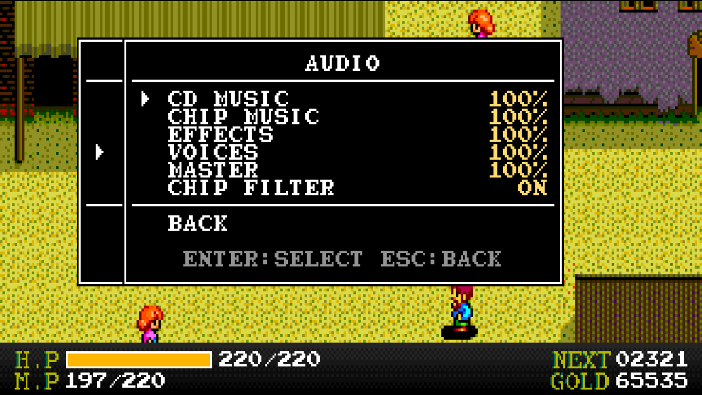
Esc or the controller's Menu button opens it, styled like Ys's own SELECT menu with the letters read from your disc. The game pauses; the music keeps playing.
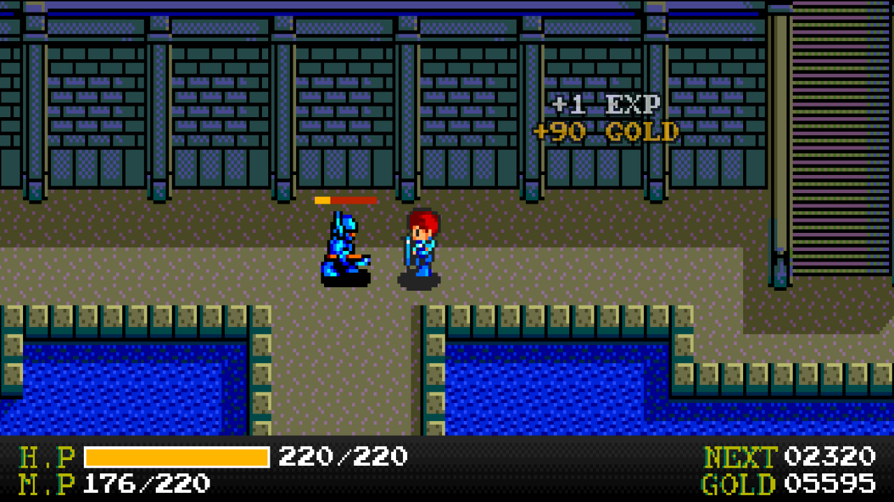
A small bar over the enemy you hit, and "+EXP / +GOLD" where it falls, both read from the game's own combat and reward routines.
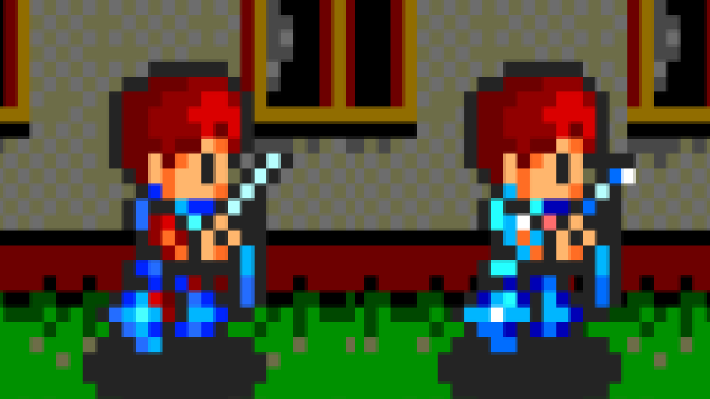
On the map Adol wears the sword, shield and armor you equipped, each with its own shape and colors, even in the reflection on the ice of Darm Tower. In the original he always looks the same (left: original sprite, right: with the option on).
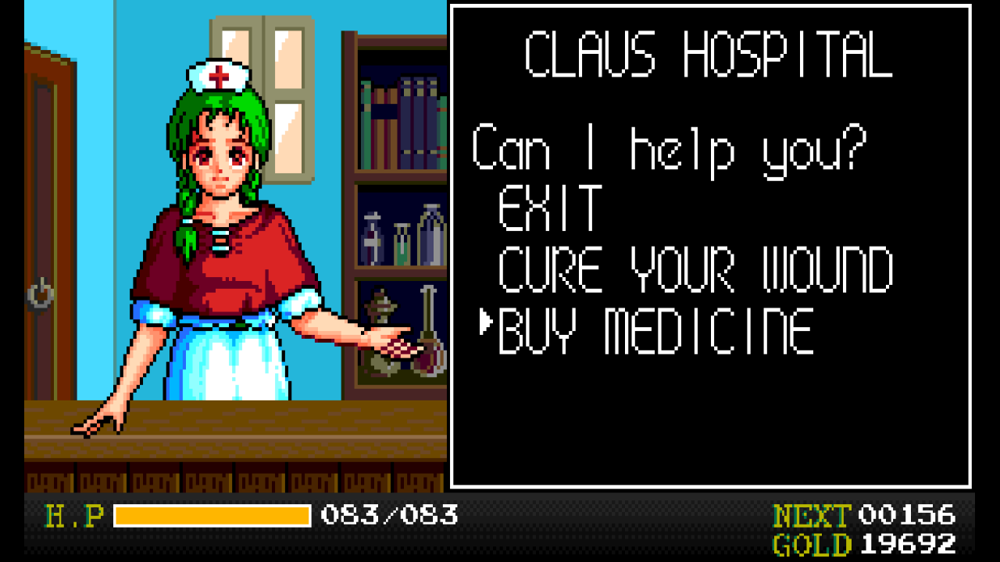
In Fill mode, portrait scenes are shown whole with the status bar below, and the game's talk, shop and menu windows come out at 3/4 scale so they fit. Instant dialog shows the typed-out texts whole.
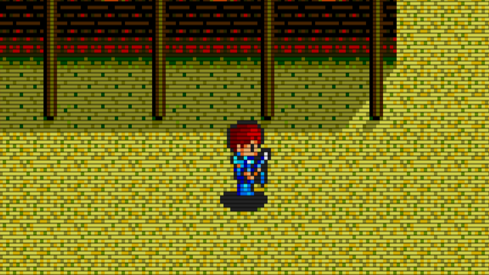
Scanlines, Lines+mask, Slot mask, Shadow mask, Glow, Glow+mask and Glow+slot, in Normal or Bright. The mask follows your screen's resolution, and the HUD and menus get the same look.
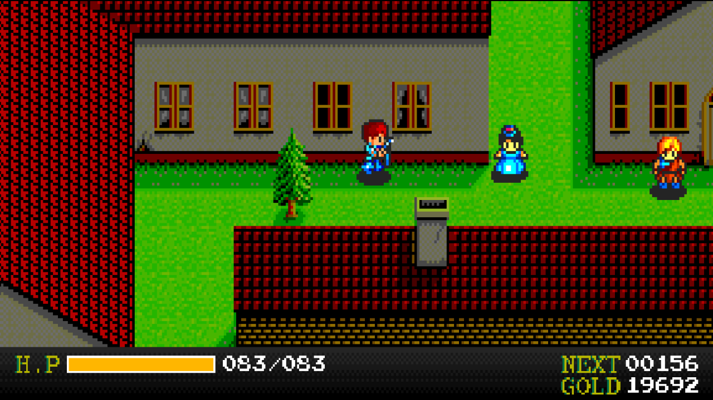
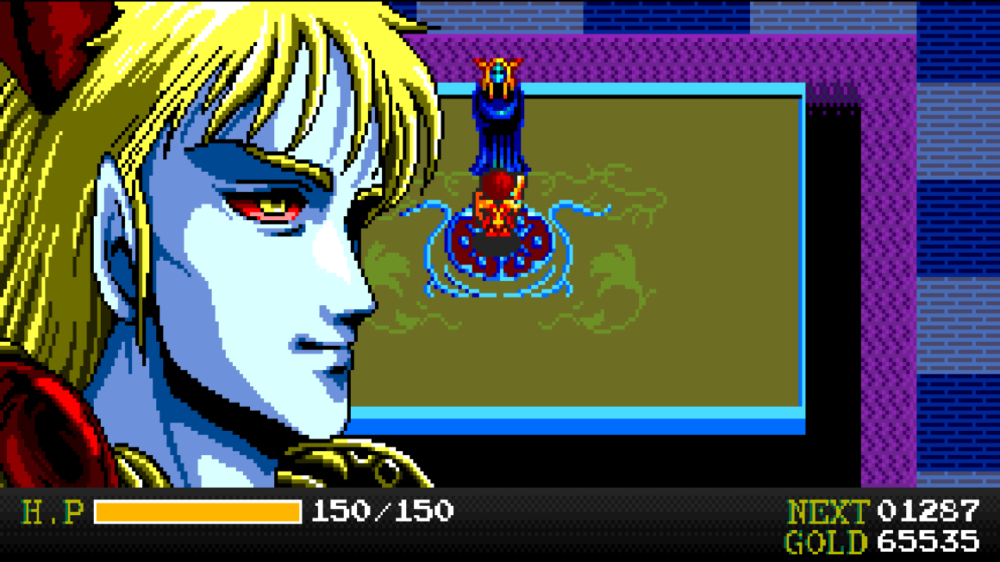
On the console the map sits inside an ornate frame with a status panel below it. YsRecomp can keep that frame, or remove it and rebuild the status as a slim bar read from the panel cells the game writes, so the map fills a modern screen. Same frame of the game, both ways:
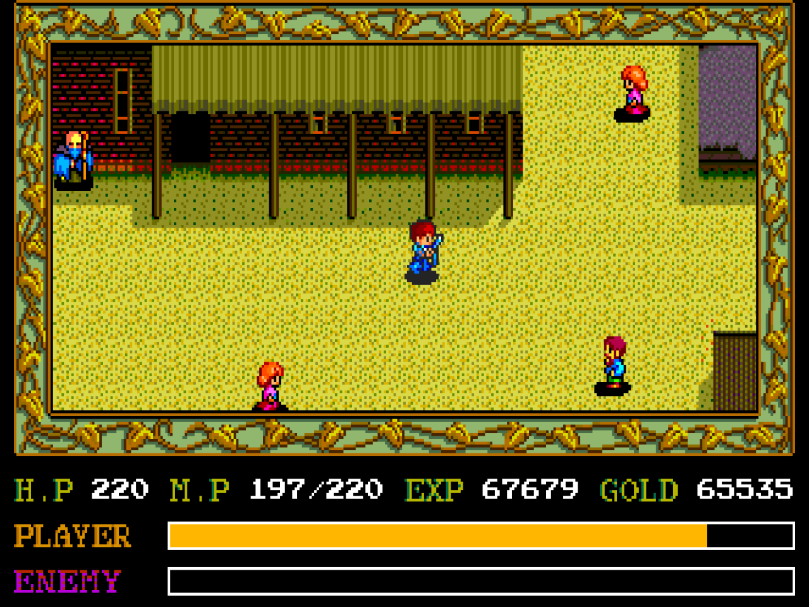
Ys runs at 60 steps per second, but its camera moves in an uneven rhythm: 2, 2, 2, 2 pixels and then 0, so the map shudders slightly as you walk. YsRecomp reads the camera and every character's position from the game's own tables and draws the picture between pixels, on the GPU, at your monitor's refresh rate: 120, 144, 180 Hz or more.
The game itself still runs exactly as before; only the drawing changes. The picture is about 1/60 s behind the controls, and the option can be turned off for the original 60 frames per second.
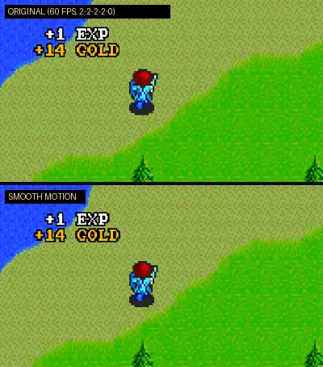
YsRecomp is not an emulator running the game: the game's machine code was translated to C ahead of time and compiled into the program, with a simulated PC Engine around it. The goal was to be correct first, and to prove it.
The game loads its code from the CD in many pieces. Its file table and loader were worked out into a disc map, so the recompiler finds all of the disc's code at once.
Each HuC6280 instruction becomes C that calls the same routine as the interpreter. The rare code that is not found falls back to the interpreter.
The recompiled game runs side by side with the interpreter, compared after every instruction; the interpreter was compared with the Geargrafx emulator frame by frame and sample by sample.
The System Card routines the game calls were rewritten in C and checked at every call against the real BIOS, so no BIOS file is needed.
The extras hook into what the game is doing (its windows, camera, actors, fades, status panel and rewards) instead of guessing from the picture.
Windows 10 or 11, 64-bit. The game is not included: you need your own copy.
| Keyboard | Controller | |
|---|---|---|
| D-pad | Arrow keys | D-pad |
| Button I | X | A |
| Button II | Z | B |
| Select | Space | Y |
| Run | Enter | X |
| Options menu | Esc | Menu |
| Fullscreen | Alt+Enter |
Keys and buttons can be changed in Options > Controls.
The game's C code is generated on your machine from your own disc, and the build and tests also use your own dump of the System Card 2.0 BIOS. Neither is ever committed. You need Visual Studio 2022 Build Tools and Python 3.14; SDL3 is downloaded by CMake.
git clone --recursive https://github.com/GITHUB_USER/YsRecomp.git
cd YsRecomp
# your own files in roms\ :
# Ys Book I & II (USA).cue + its .bin tracks
# [BIOS] TurboGrafx CD System Card (USA) (v2.0).pce
.\build.ps1 # first build generates the game's C (~12 min)
.\build.ps1 -Test # quick tests
.\build.ps1 -Package # player package in dist\More in the README.